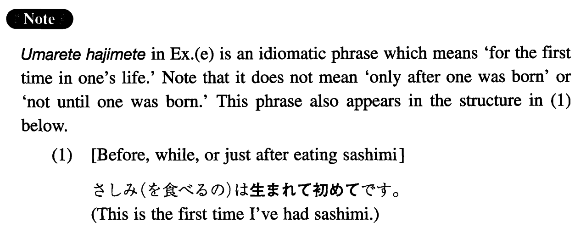

て初めて (I. 456)
- (ks).
- アメリカへ来て初めて竜巻を見た。
- It was not until I came to America that I saw a tornado.
- (a).
- 日本で生活して初めて日本人のものの考え方が分かってきた。
- It was not until I lived in Japan that I started to understand how Japanese people think.
- (b).
- 日本語を勉強して初めて外国語を学ぶ面白さを知った。
- I didn't realise how interesting learning a foreign language was until I studied Japanese.
- (c).
- 考えは文字にしてみて初めてはっきりすることが多い。
- It is often not until you write down your idea that it becomes clear.
- (d).
- 病気になって初めて健康の有り難さが分かる。
- It is only after you become ill that you realise the value of health.
- (e).
- 生まれて初めて刺身を食べた。
- I ate sashimi for the first time in my life.
